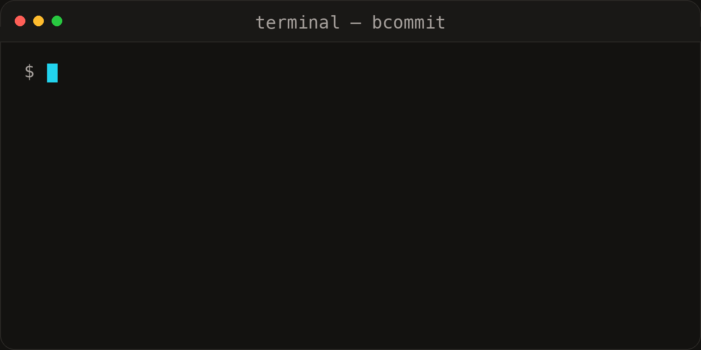

Stop writing
boring commit messages.
Your diff already says what changed. Boring Commit turns your staged changes into a conventional commit message. Local or cloud. Written in Rust. Go do something interesting instead.

Psst… it's boring on purpose!
01 — The loop
Three steps.
No thinking required.
S.01
Stage
Nothing staged, nothing happens. Obviously. git add -p, then run.
S.02
Generate
Your diff plus instructions.md go into the model. Watch the spinner.
S.03
Decide
Ship it, fix it in $EDITOR, roll again, or walk away.
02 — Providers
Pick a model.
Any model.
ollamalocalhost:11434Local · qwen2.5-coder:3b, no keyopenaiapi.openai.com/v1Hosted · key verified firstgroqapi.groq.com/openai/v1Hosted · key verified firstclaudeapi.anthropic.com/v1Hosted · key verified firstgeminigenerativelanguage…/openaiHosted · key verified firstopenrouteropenrouter.ai/api/v1Hosted · key verified firstConfigured with bcommit config, switched with bcommit model. Models are checked against /models before anything is saved. Prompt: sysprompt show / edit / reset / path — loaded every run from ~/.config/bcommit/instructions.md.
03 — Privacy
Your diff
stays yours.
P.01
Offline option
Ollama runs on-device over /api/chat with no API key. Pull once with ollama pull qwen2.5-coder:3b — diffs never leave your machine.
P.02
Keys stay local
API keys live in ~/.config/bcommit/config.json. Blank input keeps the existing key; entries are verified before saving.
P.03
Review gate
Nothing commits until you say so. Edits are previewed and confirmed; --yes exists for CI but is never the default.
Models can misread a diff. Always review the message before choosing Commit.
04 — Reference
Setup once.
Then forget the flags.
# install (macOS / Linux)
curl -fsSL https://raw.githubusercontent.com/iamprasadraju/Boring-Commit/main/scripts/install.sh | sh
# install (Windows PowerShell)
irm https://raw.githubusercontent.com/iamprasadraju/Boring-Commit/main/scripts/install.ps1 | iex
# configure
bcommit config
# daily use
git add -p
bcommitbcommit # generate (default)
bcommit config # provider + model + key
bcommit model # switch active model
bcommit model remove # delete a saved model
bcommit sysprompt # show prompt
bcommit sysprompt edit
bcommit sysprompt reset
bcommit sysprompt path
bcommit --yes # auto-committype(scope): subject
feat fix chore docs style
refactor test perf build ci revert
Subject: imperative, at most 72 chars
Body: optional, wrapped at 100Download Boring Commit
paste this in terminal
or
Download for macOSApple Silicon · macOS 13 or later · checksum on the release page
paste this in terminal
or
Download for Linuxx86_64 · any modern distro · checksum on the release page